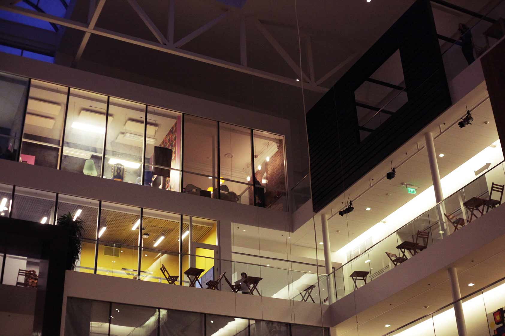
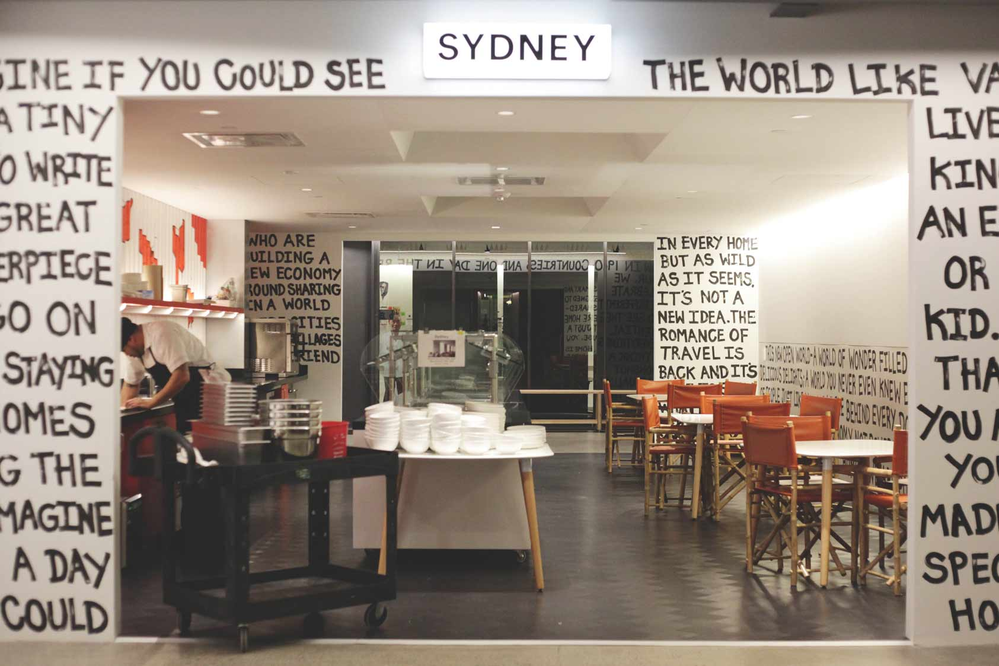
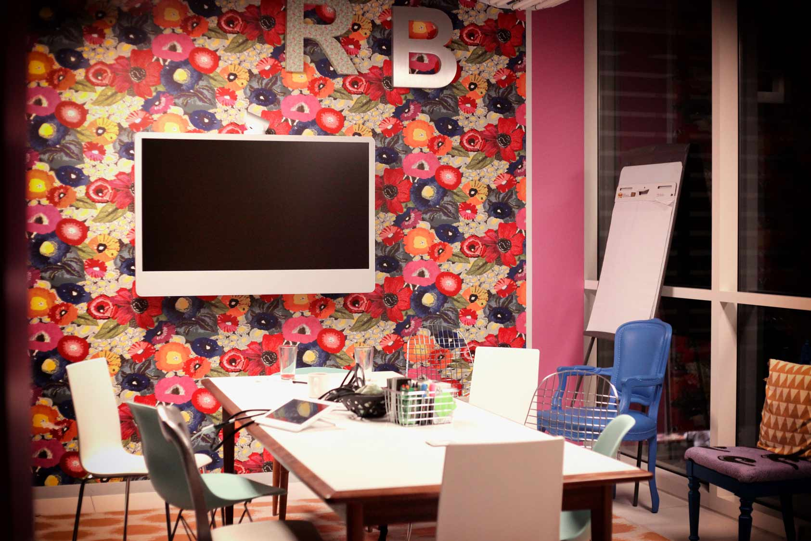
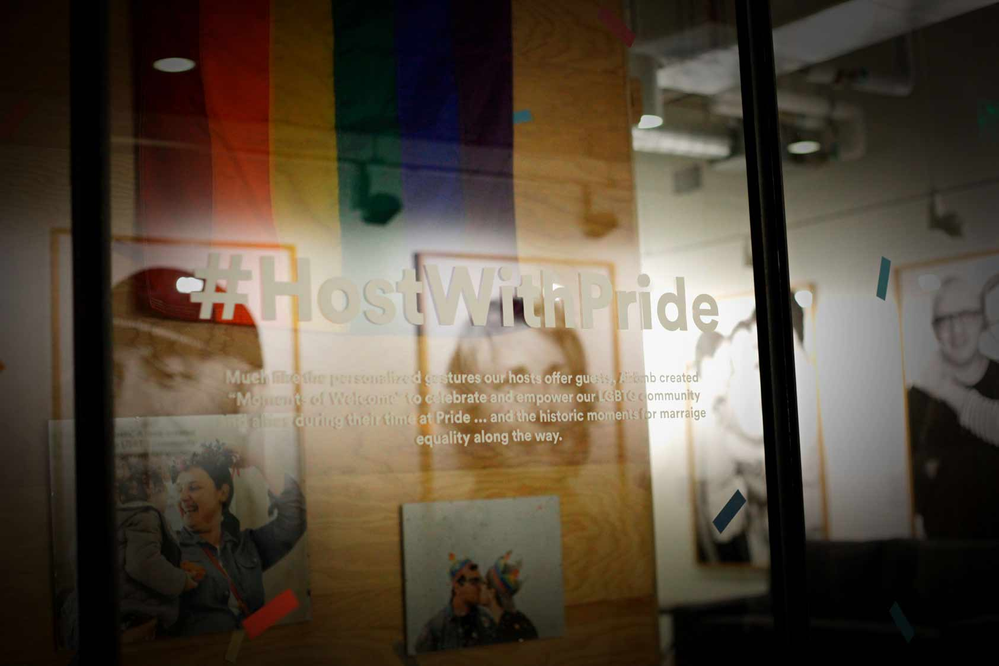
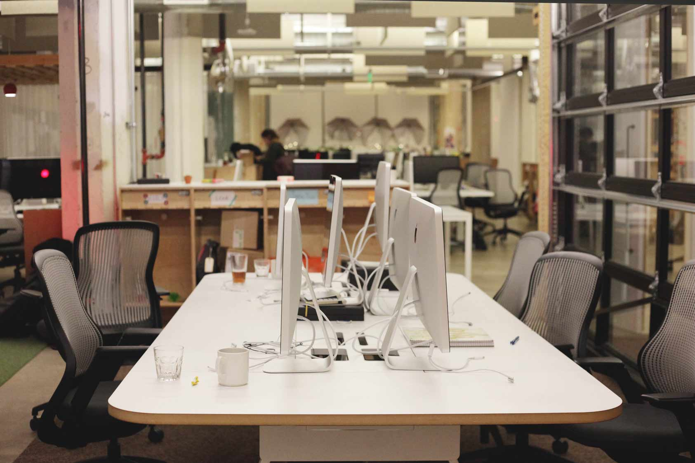

세계 191개 국의 34,000개 도시에서 여행자들을 위한 따뜻한 숙소를 제공하는 에어비앤비(Airbnb). 단순히 숙박을 해결해주는 것을 넘어 여행자들에게 특별한 경험을 선사한다는 점에서 더욱 각광받고 있다. 회사 건물로 들어서자 전세계의 온갖 거주 형태를 그대로 들여놓은 내부 인테리어가 눈길을 확 끌었다. 공간 431 팀은 이곳에서 experience designer으로 일하고 있는 **** 선배님을 만나 에어비앤비의 다양한 이야기를 들어보았다.
안녕하세요. 저희는 서강대학교 Art&Technology 학과 학생들로 이루어진 공간 431팀입니다. 회사 내부가 굉장하네요!
안녕하세요, 여러분. 정말 반갑습니다. (웃음) 회사의 내부 인테리어만 특별히 디자인하는 팀도 있긴 해요. 특별히 이윤을 만들어 내는 팀은 아니지만, 그래도 우리가 일하는 장소를 꾸밀 수 있으니까 되게 재미있을 것 같긴 해요.
 전반적으로 굉장히 회사가 밝고 활기찬 느낌이에요. 어떤 가치를 추구하는지 궁금합니다.
회사 자체가 culture을 많이 강조하는 편이에요. 물론 실리콘밸리의 많은 기업들이 그러하겠지만, 저희 회사는 좀 더 여기에 중점을 두고 있어요. 채용 인터뷰 때에도 culture value 과정이 있고요. culture라는 core mission에 대해 얼마나 공감하고 있고, 어떤 일을 맡든, 얼마나 이를 스스로 실현하고자 하는 사람인가를 보는 거죠. 또, 저희의 mission 중에는 inside-out이라는 것도 있는데, 커뮤니티를 빌드하고, 서로가 no stranger 이며, 모두 belong anywhere을 추구하는 큰 미션이에요. 우리 안에서도 연결된 커뮤니티를 만들면서 누구나 다 자기 자신으로 있으면서 코어아이디어와 미션을 호스트들에게 전해지기를 바라는 거에요. 호스트들도 자신의 공간을 만들고 이를 공유했을 때, 게스트 역시 저희의 아이디어에 동화되길 바라는 거죠. 회사 내부(inside)부터 호스트, 게스트 에게까지(out) 가는 가치를 생각하는 것으로 요약할 수 있어요. 특히 요즘에는 여행이 tourist가 아니라 traveler가 되고 있잖아요, 에어비앤비는 Local experience에 대해 많이 고민하고 있어요. 유명한 곳에 가서 사진만 찍는 식의 관광은 이미 지나갔고, 여행 지역 사람들이 실제로 어떤 경험을 하고 있는지, 냉장고에 뭐가 있는지, 무얼 하면서 사는지, 어떤 레스토랑에 단골로 가는지 아는 것이 요즘의 진짜 여행이죠. 단순히 고급 레스토랑에 가는 것 보다 다른 컬쳐의 장단점을 아는 것이 중요하잖아요? 그런 것을 만들고 싶다는 미션 안에서 에어비앤비는 이것저것 실험을 많이 하고 있어요.
현재 회사에서 Experience designer으로 일하고 계시는데, 이 직업은 어떤 일을 하나요?
저는 불문학을 전공했어요. 대학원때 미디어 아트를 했구요. VR lab에서 일하면서 애니매이션을 만들면서 애니메이터가 되는 것이 꿈이었어요. 그런데 사실 그것도 엔지니어적인 마인드가 없으면 하기가 어렵더라구요. 지금은 많이 바뀌어서 엔지니어일을 안해도 디자인만 하는 애니메이터들이 있는데 제가 학생일 때는 애니메이터가 다 라이브러리를 빌드하고 텍스쳐도 만들 줄 알아야 했었거든요. 제가 인문학을 학부 때 전공했다보니, 작업의 세세한 부분보다는 조금 추상적인 이야기를 할 때도 많고 관심이 있었어요. 그런 바탕이 애니메이션 필드에서 일하기엔 제약이 있었고, 또 당시 잘나가던 애니메이션 스튜디오들은 외국인들을 잘 안 뽑는 상황이었죠. 그러다 보니 실리콘밸리의 인터넷 회사에서 일하게 되었는데, 사실 직업명은 industry가 발전하면서 계속 바뀌었어요(웃음). Web designer였다가, UI/UX Designer, 지금은 Experience Designer인데. 코어로 하는 일은 크게 바뀌지 않았어요. 팀에 어떤 deliverable artifact를 가져다 주어야 하느냐는 조금씩 바뀌지만 코어는 product design인 것 같아요. 특정 부분에 포커스를 맞추면, 어떤 랜덤한 팩트들이 문제와 관련해 있는데, 여기서 어떤 패턴을 가지고 코어 문제를 찾고(state) 그 문제를 풀려면 어떤 솔루션을 쓰는지 등등에 관한 거를 생각해보고 그 와중에 프로토타입도 만들어보면서 어떤 방향으로 가야할지 정하는 것이 product design이 코어예요.
정말 멋진 일인 것 같아요. 예전에는 어떤 일을 하셨나요?
여기 오기 전에는 유튜브(youtube)에 있었어요. 비디오를 만드는 유저들을 위한 비디오 제작 앱을 만드는 부서였는데, 비디오 앱의 문제는 사람들이 비디오를 찍지 않는다는 거예요. 많은 사람들이 사진은 찍지만 비디오는 잘 찍는 사람이 없거든요. 결국, 비디오를 만들 이유가 없는 것이 문제잖아요? 그래서 저희가 많이 생각한 것은 사람들이 ‘저 정도면 나도 만들 수 있겠는데?’라고 생각하는 비디오를 많이 보여는 것이었어요. 이벤트를 중심으로 큰 행사가 열렸을 때, 비디오를 만들 수 있도록 컨텍스트를 준다던지 하는거죠.
현재 하고 계시는 일에서 가장 중점적으로 두고 있는 점이 무엇인가요?
지금은 New Host Growth 이라는 팀에서 일을 해요. 에어비앤비 게스트의 성장에는 문제가 없어요. 여행은 누구나 하고 싶어 하는 거니까요. 그런데 문제는 뭐냐면, 호스트의 성장은 그만큼 못 따라간다는 거에요. 뉴욕, 샌프란시스코, 런던, 일본의 주요 도시들은 관광객들도 많고 사람들이 에어비엔비를 많이 찾는데, 호스트는 여러가지 이유로 많지 않아요. 뉴욕은 사실 4번째로 호스트가 많은 도시이긴 한데도 관광객의 니즈가 워낙 크기 때문에 공급이 그만큼 못 따라가는 경우에요. 우리집을 낯선 이들에게 제공해야 한다는 게, safety나 집정리 같은 여러 가지 이유로 조금 힘든 일이거든요. 지금은 호스트에게 있어서 어떤 것이 fair point인지 정의를 하고, 또 이들의 Long term project가 뭔지에 대해 고민하고 있죠. 지금은 이와 관련해서 프로젝트를 4개월째 진행 중이고, 곧 관련 프로덕트를 런칭할 예정이에요.
일을 하면서 겪었던 특별한 경험이 있나요?
작년(2014)에 파리에 테러어택이 있었어요. 저희는 매년 오픈이란 행사를 하거든요. 전세계에 있는 호스트들이 한 곳에 모여서 축하도 하고 서로 알아가는 행사에요. 파리에서 행사를 3일간 진행하던 중 두 번째 날 밤에 테러가 생긴 거예요. 그래서 당연히 세 번째 날 행사가 취소되었고, 운이 좋게도 저희 행사에 참여한 사람들 중에는 직접적으로 다치거나 한 사람은 없었지만요. 그 때 놀랐던게, 미국에 이런 일이 있었으면 행사 진압 및 모든 곳들이 shut down했을 텐데, 파리 사람들은 “우리가 계속 인생을 즐기지 않으면 테러리스트들에게 진 거다”라는 얘기를 하더라구요. ‘테러리스트들이 공격을 하는 이유는, 즐기는 삶을 못 가지게 하려고 큰 두려움을 심어서 일상적인 삶을 방해하려는 것인데 그대로 따르면 그들에게 지는 거다’ 라는 식으로요. 저도 한 호스트랑 함께 있었는데, 게스트들이 두려움에 밖에 잘 못나가니까 호스트가 걱정하면서 집에서 같이 크레이프 만들자고 얘기하고, 어려운 상황이 있으니까 외국인이나 관광객들에게 더 잘해주려고 신경쓰시더라구요. 시민의식이 다른 것 같아요. 서로 도와야 한다는 생각이 강한 것 같았어요. 잊을 수 없는 경험이었죠.
개인적으로 저희는 진로에 대해 걱정이 많은데요. 여기에 대해서 조언해주실 부분이 있으신가요?
진로 정하는 것에 대해서 너무 스트레스 안받는 것이 중요한 것 같아요. 사람들이 50살까지도 커리어는 계속 변해가는 거니까. 지금 당장 딱 이 길이 아닌 것 같을 때, 방대하게 있을 수 있는 배짱이 중요한 것 같아요. 대신 스스로에게 솔직해야 해요. 이거다 싶은 것이 있으면 곧장 따라가는 그런 배짱이요. 그래야 오래할 수 있는 것 같아요. 내 것이 아닌데, 그냥 그것이 핫해보여서 라던지, 아니면 외부의 이유 때문에 어떤 길을 선택하면, 어느 순간에는 한계에 부딪히게 되는 것 같아요. 당장은 어떤 길을 가더라도 여러분은 똑똑하니까, 잘 하실 것 같아요. 하지만, 장기적으로 보았을 때, 자기 안의 potential이 확실히 있는 것을 잡아야 장기적으로 남들과는 다르게 계속 할 수 있는 ‘내 것’이 나오는 것 같아요. 그런 부분을 생각 해보는게 되게 중요해요.
따뜻한 조언 정말 감사드립니다. 에어비앤비라는 회사와 experience designer이라는 직업에 대해서도 많은 이해를 하게 된 것 같아요.
네. 여러분들도 미국에서 좋은 경험하고 가시길 바랍니다.(웃음)